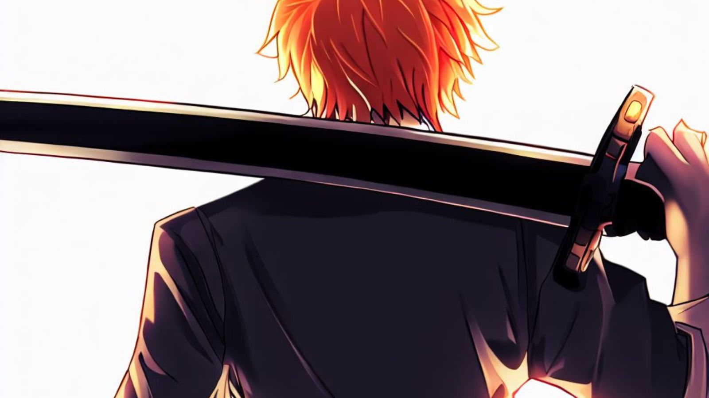

The Best Anime Series to Watch in 2023 (Until Now)

Introduction
The world of anime is ever-evolving, offering a diverse range of stories, characters, and genres to explore. Whether you're a seasoned anime enthusiast or just starting your journey, this guide will help you navigate the vibrant landscape of anime and discover the perfect series to captivate your imagination.
Table of Contents
Understanding the New Gen Anime Phenomenon
Before diving into the recommendations, let's look into the term "New Gen Anime." It refers to anime series released in recent years, characterized by fresh storytelling approaches, unique animation styles, and a new wave of creators pushing the boundaries of creativity.
Top 10 New Gen Anime of 2023
3.1. Jujutsu Kaisen: The Cursed Phenomenon Continues
The newest season of Jujutsu Kaisen, Season 2, is generating excitement with its innovative approach to sequels. It promises to redefine how sequels are executed in the anime world, according to CBR. While specific details about the season's plot and release dates can be found in various sources, fans can expect a fresh and captivating experience that builds on the success of the first season. For those eager to dive back into the Jujutsu Kaisen world, Season 2 is set to deliver something truly special.
3.2. Vinland Saga: Viking Adventures Await
"Vinland Saga" is a historical manga series written and illustrated by Makoto Yukimura. It is set in Viking Age Europe and follows the tale of Thorfinn, a young warrior seeking revenge against the man who killed his father. The story is heavily inspired by real historical events and characters, intertwining both fictional and non-fictional elements. It explores themes of war, morality, and the price of revenge. The narrative primarily focuses on Thorfinn's journey towards personal growth and his search for a peaceful existence in a brutal and chaotic world. As for the anime adaptation, "Vinland Saga" premiered in July 2019 and aired for 24 episodes. The first season covered the prologue and the "War arc" of the manga. The animation studio Wit Studio, known for their work on "Attack on Titan," was responsible for adapting the series. The first season received critical acclaim for its exceptional animation, character development, and intense action sequences. It was praised for its faithfulness to the source material and its ability to capture the dark and gritty atmosphere of the manga.
The latest Vinland Saga Season 2 anime has drawn attention for its epic Viking saga. Crunchyroll offers a complete Season 2 guide for fans. Season 3 is also on the horizon, exciting fans. Reviews provide insights into the series' quality and appeal. Vinland Saga's anime keeps captivating audiences with its gripping story and historical backdrop.
3.3. Baki Hanma: Unleash the Beast
Baki Hanma is an anime series that follows the story of Baki Hanma, a young martial artist seeking to become the world's strongest fighter. The anime depicts his intense training, as well as his battles against various formidable opponents from around the world. Baki Hanma is known for its intense and brutal fighting scenes and explores themes of strength, determination, and the pursuit of one's goals.
Baki Hanma continues to deliver intense martial arts showdowns. Expect bone-crushing fights as Baki faces formidable opponents, pushing the limits of human strength.

3.4. One Piece
One Piece is a popular anime and manga series created by Eiichiro Oda. It follows the adventures of Monkey D. Luffy, a young pirate with the ability to stretch his body like rubber after eating a mysterious fruit called the "Devil Fruit." Luffy aims to become the Pirate King by finding the ultimate treasure known as One Piece. Set in a world where pirates roam the seas, the story takes place in a vast, diverse, and imaginative universe called the Grand Line. Luffy gathers a crew of eccentric pirates, known as the Straw Hat Pirates, as he sails through dangerous seas, battles rival pirates, and faces various obstacles. The series features a wide range of unique characters, each with their own abilities, goals, and backstories. Luffy's crew includes Zoro, a swordsman seeking to become the world's greatest; Nami, a skilled navigator; Usopp, a sharpshooter and skilled liar; Sanji, a talented chef and martial artist; and many others. The crew shares a strong bond and displays themes of friendship, loyalty, and perseverance throughout their journey. One Piece is known for its epic storylines, intricate world-building, and diverse cast of characters. It combines elements of adventure, action, comedy, and drama, often incorporating themes of justice, dreams, and the value of personal freedom. The series has gained a massive international fanbase and has been praised for its compelling storytelling, well-developed characters, and deep exploration of complex themes.
The latest developments in the One Piece anime series have generated significant buzz. As per Netflix's announcement, the 'ONE PIECE' adventure will continue, hinting at new episodes and arcs to come. Fans can stay updated with the release schedule for new episodes, ensuring they don't miss any of the action. Netflix's adaptation of One Piece has received acclaim, making it a must-watch for both fans and newcomers to the series.

Old But Still New: What You Missed
4.1. Bleach: The Return of Soul Reapers
The "Bleach: Thousand-Year Blood War" anime is highly anticipated, with TYBW Part 1 impressing fans with visuals and manga faithfulness. TYBW Part 2 adds new battles, sparking excitement among fans. Overall, the adaptation is well-received by "Bleach" enthusiasts. For more details check out our article covering the newest Bleach season Here.
4.2. Hunter x Hunter: Anticipating Gon's Next Adventure
While there's no official release date yet, we can't help but anticipate the return of Hunter x Hunter. Gon's journey promises more exhilarating adventures and discoveries.
Upcoming Animes in 2023
Attack on Titan: The Final Season
The highly anticipated conclusion to the action-packed and intense series is set to release in 2023. Fans of the show will be excited to see how the epic battle between Eren and his friends unfolds.
My Hero Academia Season 6
The beloved superhero anime will continue to captivate audiences with its thrilling storylines and powerful character development. With new challenges and the growth of the main character, Izuku Midoriya. Many fans can’t wait for what is going to be happen with the league of villains, and the battle with the superheroes.
Jujutsu Kaisen Season 2
Jujutsu Kaisen Season 2 is the continuation of the popular anime series based on the manga written by Gege Akutami. The story follows the protagonist Yuji Itadori, a high school student who becomes involved in the supernatural world of jujutsu (a form of sorcery) after consuming a cursed finger and becoming the host to a powerful curse named Sukuna Ryomen. In Season 2, the story picks up from where Season 1 left off, with Yuji and his friends at Tokyo Metropolitan Jujutsu Technical High School trying to grow stronger and protect the world from curses. The cursed spirits and their associated curses pose a threat to humanity, and the Jujutsu sorcerers are tasked with exorcising them.
5.2. Exploring Unique Themes
Anime is renowned for tackling diverse themes. In the upcoming year, expect anime that delves into social issues, psychological complexities, and the human condition.

How to Stay Updated on Anime Releases
To stay in the anime loop, follow official anime websites, subscribe to streaming platforms, and engage with the anime community. Your fellow fans are an excellent source of recommendations and news.
Conclusion
As we step into 2023, the world of anime welcomes us with open arms, offering an array of exciting series to explore. Whether you're drawn to the continued adventures of long-standing favorites or eager to uncover hidden gems, there's an anime waiting to capture your heart and imagination. Embrace the new gen anime revolution and embark on unforgettable journeys with your favorite characters.
Frequently Asked Questions (FAQs)
-
1. What are the top 10 new gen anime of 2023?
We've highlighted Jujutsu Kaisen, Vinland Saga, Baki Hanma, and One Piece among the must-watch new gen anime of 2023. Explore their unique worlds and thrilling stories.
-
2. Is Hunter x Hunter returning in 2023?
While there's no confirmed release date yet, fans are eagerly anticipating the return of Hunter x Hunter for more adventures with Gon and his friends.
-
3. How can I discover new and original anime in 2023?
Keep an eye on official anime websites, subscribe to streaming platforms, and engage with the anime community to uncover hidden gems and fresh, original creations.
-
4. What should I consider when choosing an anime to watch in 2023?
Consider your preferences, whether you enjoy action, drama, or mystery, and explore anime that align with your taste. This guide can help you find the perfect match.
-
5. Where can I watch these anime series?
You can watch these anime series on popular streaming platforms such as Crunchyroll, Funimation, Netflix, and Hulu, depending on availability in your region.